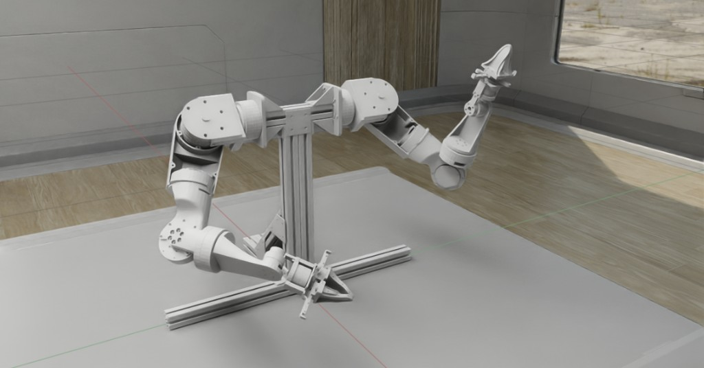
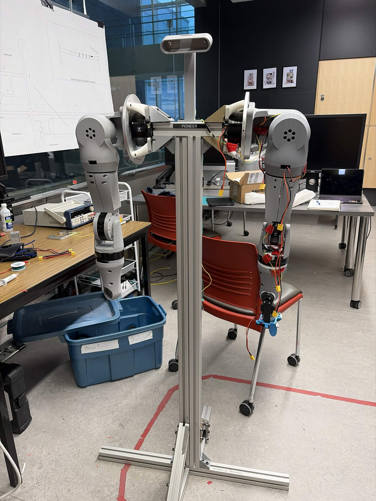
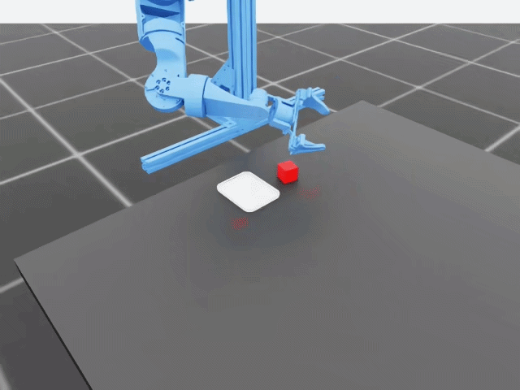
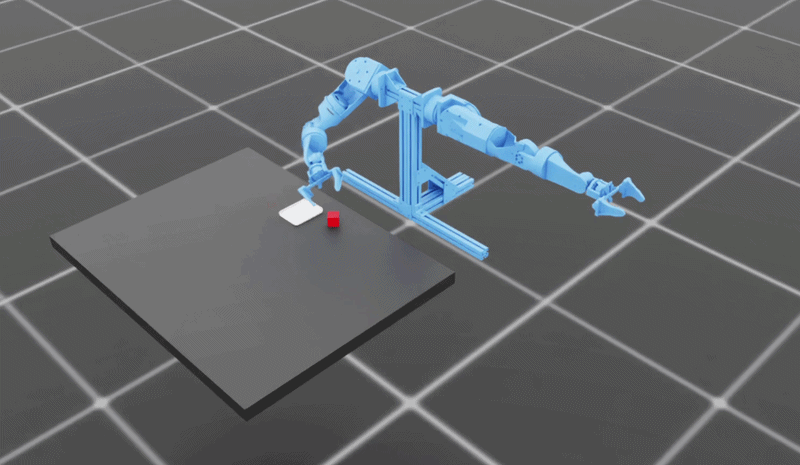
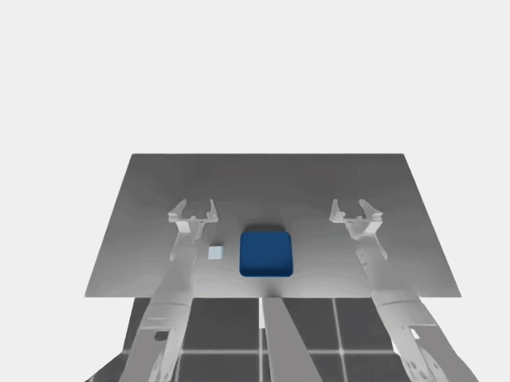
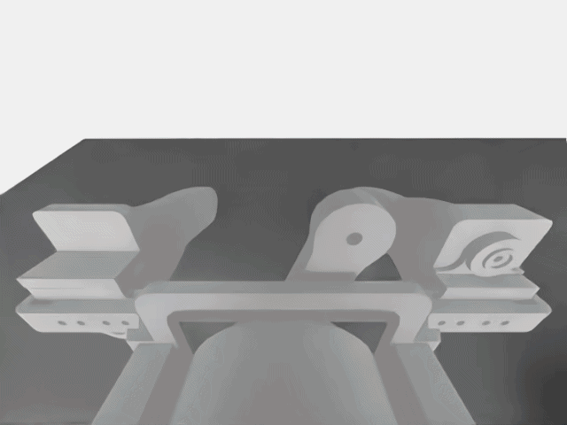

Pioneer Humanoid Robot
Overview

6DOF Arm(s)


CuRobo Synthetic Datagen + ACT Policy


VR Teleop
Simulation data handles the basics, but generalizing to messy real-world tasks needs human intuition. Our baseline VR teleop stack ran at an unusable 0.14 real-time factor (RTF), so I took over the pipeline to make it fluid enough for real data collection. It streams WebXR spatial packets from a Meta Quest 2 over JSON to a C++ node, which translates them into ROS2 positions subscribed to by Nvidia Isaac Sim, all containerized with Docker on Linux.

To crush the latency bottleneck, I re-architected the infrastructure. Container consolidation collapsed two separate Docker containers into one, killing inter-container network overhead, and direct tensor access bypassed the slow image-broadcasting step by reading Isaac Sim’s raw image tensors straight into the VR view. Together, these changes slashed compute time per frame by ~3x, taking us from a lagging 0.14 RTF to a stable, real-time 1.0 RTF with headroom to spare, comfortably fast enough to capture fluid human data for training.
